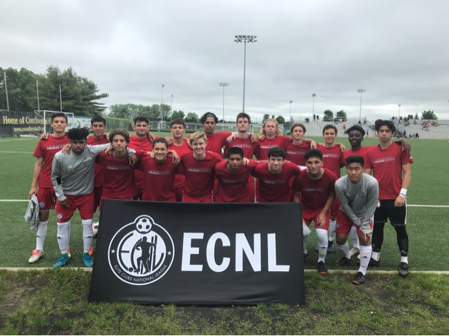

Number 2 in Purple and/or White
Postions: Fullback and Outside Midfielder
LA PREMIER FC LAPFC B00
List of tournaments and showcases that I have played in with my club team. 2016:Dallas Cup 2016 (Dallas, Texas) Surf Cup 2016 and 2017(San Diego) 2017:Jefferson Cup 2017 (Richmond, Virginia) 2017:Manchester City Cup 2017 (San Diego) 2018:ECNL Philadelphia Showcase 2018 (Philadelphia Pennsylvania)
Upcoming: 2018 Disney Showcase and ECNL Regional Showcase Florida
I was mentioned in an article when I played in Jefferson Cup in Virgina.
Tough defense, competition featured at Jefferson Cup Boys Showcase In other U-17 Championship Division action, SoCal NPL side LA Premier FC 2000 made its first ever appearance at the Jefferson Cup, and the West Coast club had a strong defensive showing at the event. LA Premier earned two draws against a couple extremely tough opponents in its opening matches, playing Virginia State Cup champion SOCA to a 0-0 decision and tying Maryland's OBGC Rangers Blue 1-1. Lucas Lizardo, Ian Young, Spencer Harris and Mendez Andres anchored the back line, and goalkeeper Edward Youssef helped limit LA Premier's first two opponents to a combined one goal.